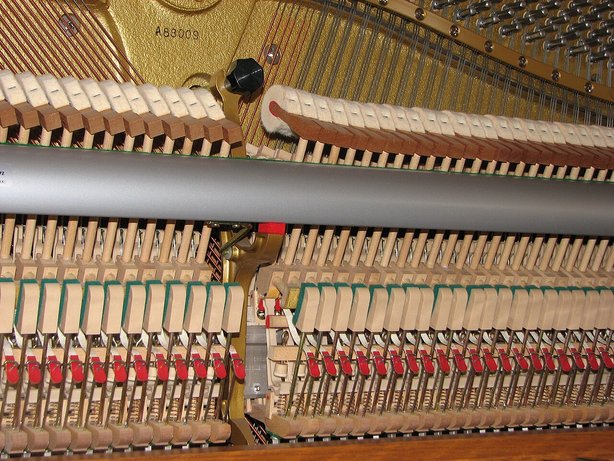
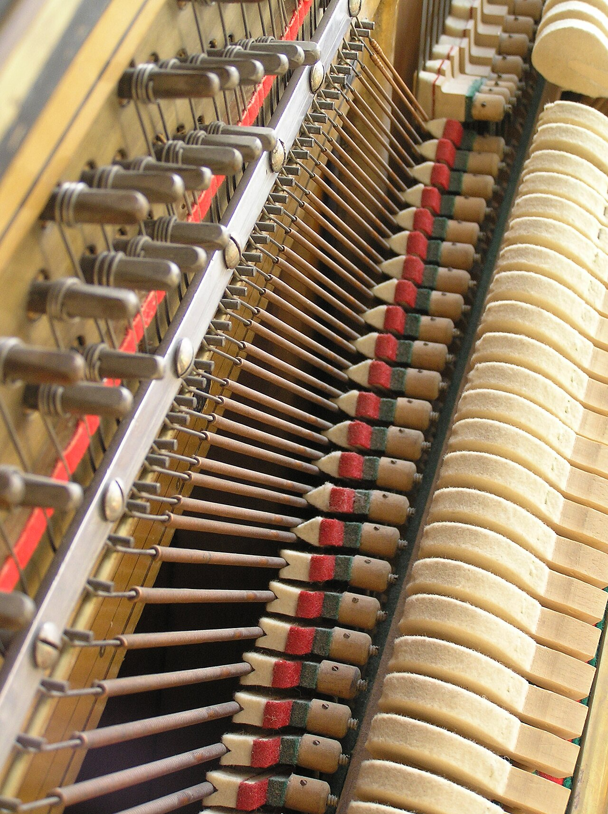
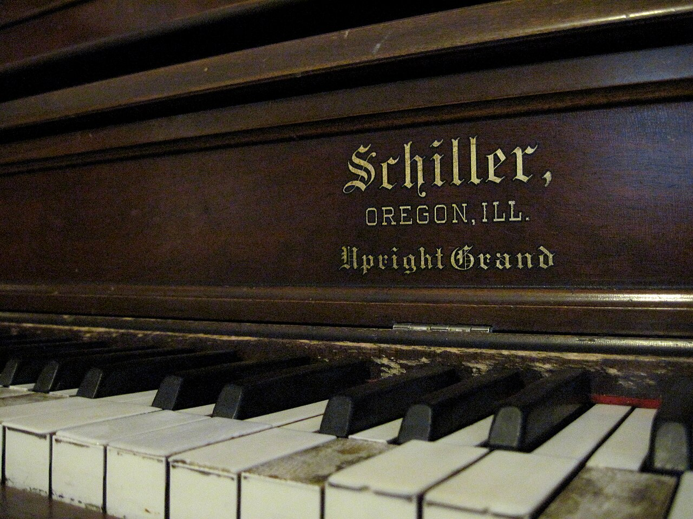
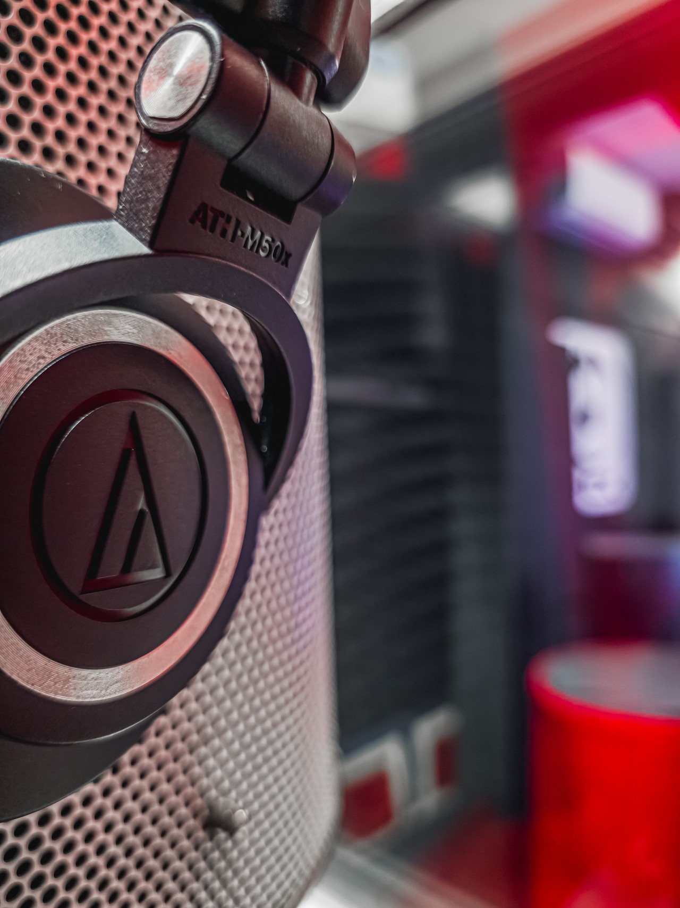
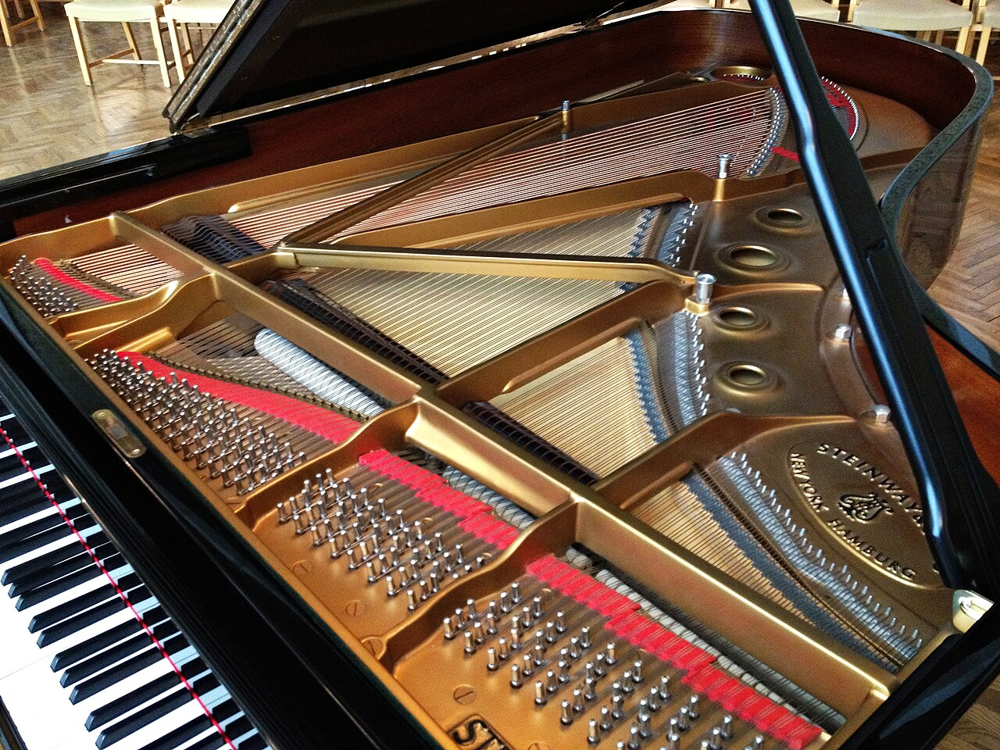
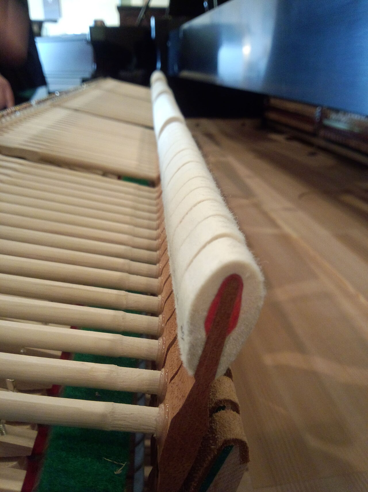
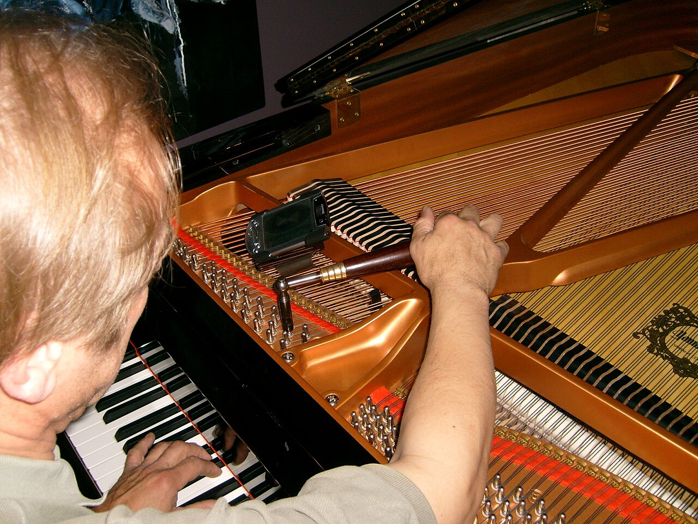

제니오 사일런트로 쓰시던 피아노에 「방음 모드」를 더하세요.
서울 · 경기 · 인천 출장 설치, 35년 경력 피아노조율사가 직접 합니다.
밖으로 나가는 소리 크기
일반 모드: 해머가 줄을 쳐서 원래 피아노 소리가 납니다.

해머: 건반을 누르면 이 해머가 줄을 칩니다. 방음 모드에서는 줄 바로 앞에서 멈춥니다.

건반: 아래에 광센서가 들어가 누른 세기(128단계)를 읽습니다. 건반 느낌은 그대로입니다.

헤드폰: 디지털 피아노 소리를 헤드폰이나 스피커로 듣습니다. 단자가 2개라 둘이 같이 들을 수 있어요.
| 기능 | 에센스 V2 | 프리미엄 알파 | 프리미엄 플러스 | SV-2 |
|---|---|---|---|---|
| 추천 대상 | 간단히 연습 | 기능 다양하게 | 연주·작곡 | 고급 음색 |
| 본체 모양 | 고정 부착 | 슬라이드 수납 | 슬라이드 수납 | 수출형 |
| 방음 전환 | 수동 레버 | 수동 레버 | 원터치 | 수동 레버 |
| 광센서 · 128단계 세기 | ○ | ○ | ○ | ○ |
| 음색 수 | 10 + GM 128 | 17 + GM 128 | 17 + 사용자 16 + GM 128 | 야마하 음원 |
| 화면 | × | LCD | OLED | - |
| 녹음·재생 | × | 4트랙 | 4트랙 | - |
| 블루투스(휴대폰 연결) | × | ○ | ○ | USB-C 앱 연동 |
| 메트로놈 | 빠르기만 | ○ (박자·음량) | ○ | ○ |
| 연습곡(바이엘·체르니·소나티나) | × | ○ | ○ | - |
| 소스테누토(가운데) 페달 | × | × | ○ | - |
| 업라이트 가격(참고) | 약 110만 원 | 약 129~130만 원 | 약 139~140만 원 | 약 140만 원 |
| 그랜드 가격(참고) | - | 약 220만 원 | 약 220~230만 원 | 약 235만 원 |
※ 가격은 2026년 시중 판매처(도미솔 악기 2026년 6월 기준, 피아노메이트 등)에 공개된 출장·설치비 포함 가격을 참고로 정리했습니다. 실제 설치비는 피아노 종류와 상태, 지역에 따라 달라질 수 있으니 상담 때 정확히 알려 드립니다. 「-」는 판매처에 따로 표기되지 않은 항목입니다.
| 방법 | 대략 비용 | 작업 시간 | 밤 연습 | 특징 |
|---|---|---|---|---|
| 소음키퍼(방진 받침) | 7~8만 원 | 바로 | 어려움 | 바닥 울림만 줄임 |
| 피아노 자체방음(흡음재) | 45~65만 원 | 1~2시간 | 어려움 | 소리 30% 안팎 감소, 음색 답답해짐 |
| 제니오 사일런트 | 110~235만 원 | 2~6시간 | 가능 | 지금 피아노 그대로, 레버로 전환 |
| 순정 사일런트 피아노(야마하 SC3 등) | 790~920만 원(새 피아노) | - | 가능 | 공장 완제품, 피아노를 새로 사야 함 |
| 방음 부스 | 600~2,000만 원 | 1~2일 | 가능 | 공간 차지, 환기 필요 |
| 방 전체 방음 공사 | 평당 300~1,000만 원 이상 | 5~7일 | 가능 | 비용·공사 부담 큼 |
※ 비용은 2026년 국내 판매처·시공업체에 공개된 금액을 참고한 대략적인 범위입니다(야마하 뮤직코리아 권장소비자가, 도미솔 악기, 정음악기 등).

그랜드 피아노도 설치할 수 있습니다. 그랜드는 구조가 달라 업라이트보다 작업 시간이 길고 가격이 높습니다.

뮤트바 위치와 렛오프 조정이 터치감을 좌우합니다. 피아노를 잘 아는 조율사의 손이 중요한 이유입니다.

설치 뒤 조율까지 함께 마무리합니다.
지금 쓰시는 일반(어쿠스틱) 피아노 안에 넣는 방음 장치입니다. 레버를 내리면 해머가 줄을 치기 직전에 멈추고, 건반 아래 광센서가 누른 세기를 읽어 헤드폰으로 디지털 피아노 소리를 들려줍니다. 레버를 올리면 원래 피아노 소리 그대로 칩니다.
아닙니다. 건반 아래 센서 레일, 액션의 뮤트바(방음대), 페달 센서, 본체를 붙이는 작은 나사 몇 개뿐입니다. 줄·향판·해머 같은 피아노 본체는 건드리지 않고, 나중에 떼어 낼 수도 있습니다.
제대로 설치하면 거의 차이가 없습니다. 뮤트바 위치와 「렛오프」(해머가 줄 앞에서 빠지는 순간) 조정이 핵심인데, 이 조정을 대충 하면 건반이 가벼워집니다. 그래서 피아노를 잘 아는 조율사가 설치하는 것이 중요합니다.
업라이트는 보통 2~3시간, 그랜드는 4~6시간 정도입니다. 피아노 상태에 따라 조금 달라집니다. 대부분 댁에 방문해서 설치합니다.
줄을 치지 않으니 피아노 소리는 거의 사라지고, 건반을 누르는 「톡톡」 하는 작은 기계 소리만 납니다. 늦은 밤 아파트에서도 연습할 수 있는 수준입니다. 바닥 울림까지 줄이려면 소음키퍼(방진 받침)를 함께 쓰시면 좋습니다.
영창·삼익·야마하·카와이 등 브랜드와 관계없이 대부분의 업라이트와 그랜드에 설치할 수 있습니다. 아주 오래되었거나 고장이 심한 피아노는 먼저 점검·수리 후 설치합니다.
버튼 몇 개로 간단히 쓰실 분(어르신, 기본 연습용)은 에센스 V2, 녹음·블루투스·화면·연습곡 등 기능을 다양하게 쓰실 분은 프리미엄 알파나 프리미엄 플러스, 더 고급스러운 피아노 음색을 원하시면 SV-2를 권해 드립니다.
헤드폰으로 듣는 디지털 소리는 조율이 필요 없습니다(기준음 440Hz 고정). 하지만 레버를 올려 일반 피아노로 칠 때는 지금처럼 1년에 1~2번 조율이 필요합니다.
네. 헤드폰 단자나 라인 출력에 스피커를 연결하면 됩니다. 기본 패키지에 피아노용 헤드폰이 들어 있고, 헤드폰 단자가 2개라 레슨 때 선생님과 학생이 함께 들을 수 있습니다.
먼지와 물기만 조심하면 피아노 수명만큼 오래 씁니다. 몇 년 뒤 건반 사이 먼지로 센서가 둔해지면 조율 때 청소를 함께 해 드립니다. 건반 사이로 음료가 들어가면 센서 교체가 필요할 수 있습니다.
네. 다른 피아노로 옮겨 달 수 있습니다. 다만 피아노 기종이 다르면 부품과 이전 설치 비용이 따로 듭니다.
야마하 SC3·SH3 같은 순정 제품은 공장에서 사일런트를 넣어 만든 새 피아노라 700만~900만 원대입니다. 제니오는 지금 가진 피아노에 나중에 다는 장치라, 피아노를 바꾸지 않고 100만 원대부터 방음 기능을 더할 수 있습니다.
이 페이지는 미리 정리한 질문과 답 모음입니다. 더 궁금한 점은 아래 전화나 문자로 피아노 종류(업라이트/그랜드, 브랜드)와 지역을 알려 주시면 맞는 모델과 설치 일정을 안내해 드립니다.
위에 없는 지역도 상담해 주세요. 거리에 따라 출장비가 조금 달라질 수 있습니다.
피아노 종류와 지역을 알려 주시면 맞는 모델과 일정을 안내해 드립니다.
성실피아노 · 피아노조율·운반 35년 · GENIO 사일런트 설치